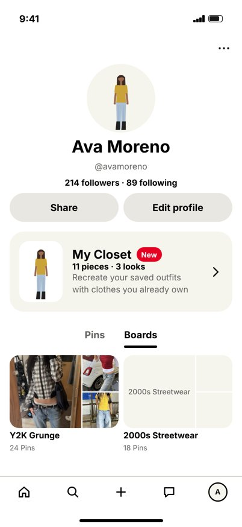
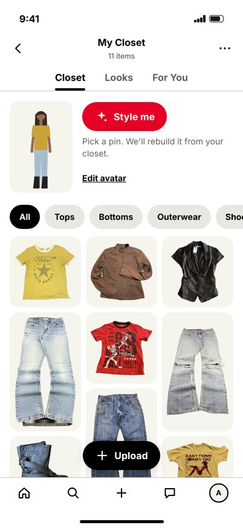
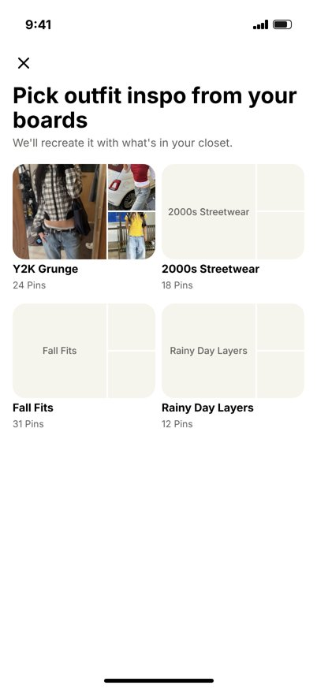
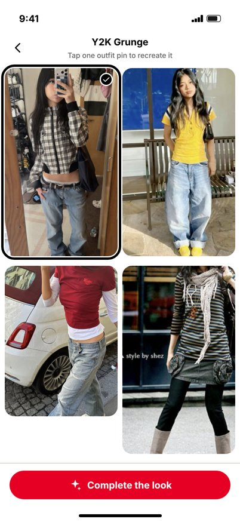
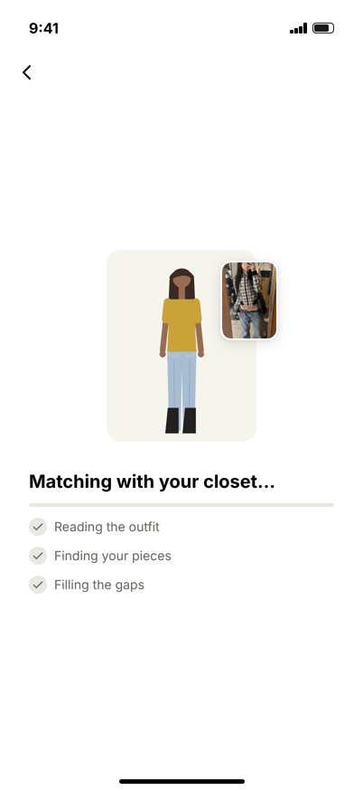
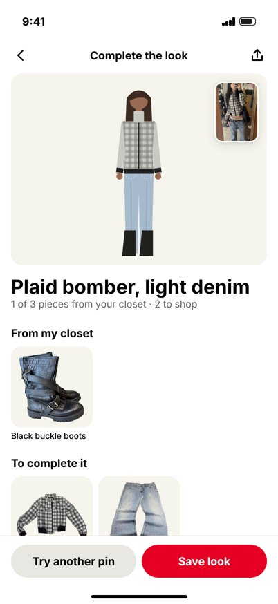
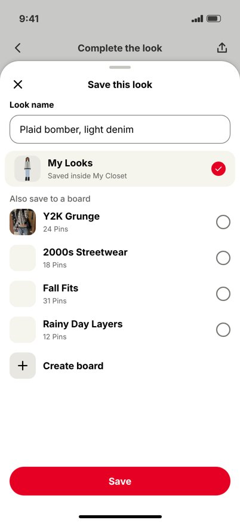
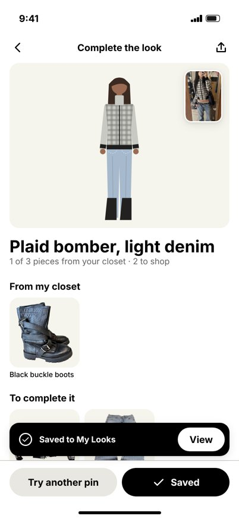
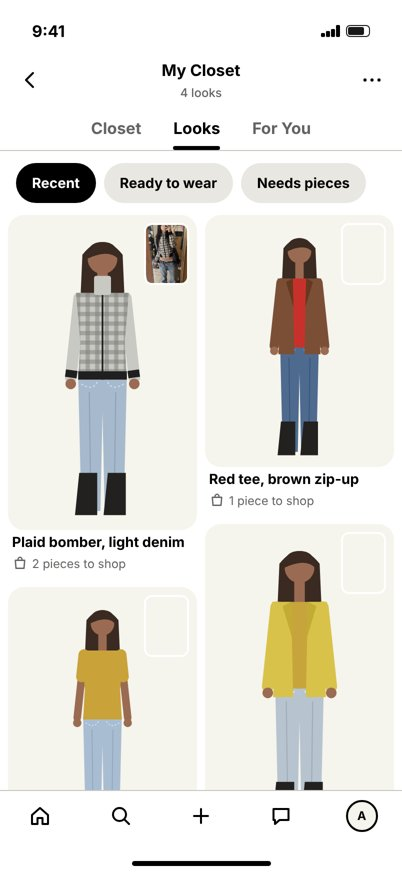
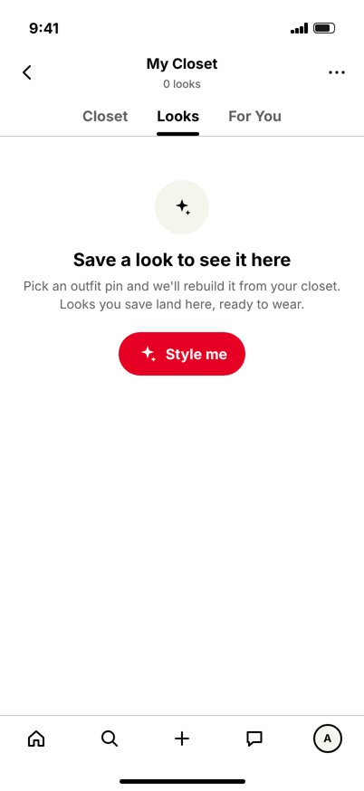

Student concept for DES 198 (Introduction to Product Design). Not made by or affiliated with Pinterest.
Working iPhone 17 prototype (402 × 874), built from Gestalt, Pinterest's design system. Your avatar, uploads and saved looks carry across screens. Press Reset to start fresh.

01 · ProfileEntry point
04 · ClosetCompact header, masonry
08 · Pick a board
09 · Pick a pin
10 · Matching…Loading state
11 · Complete the lookKey screen · chosen version
12 · Save this look
13 · SavedToast
14 · LooksMasonry
15 · Looks, emptyEmpty stateWe chose A. B and C stay here for the Explorations part of the case study.